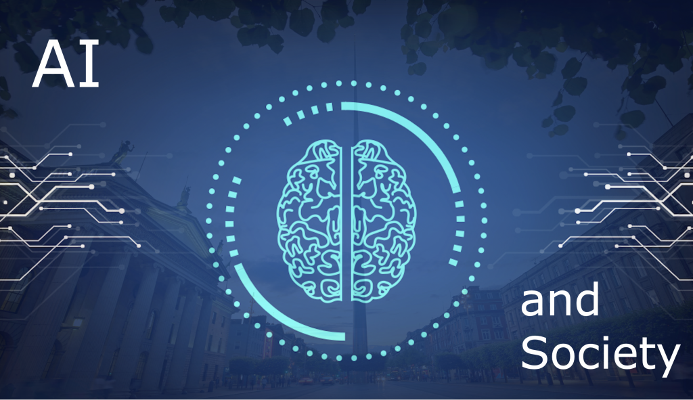
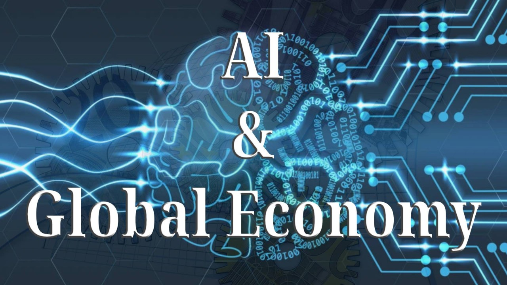
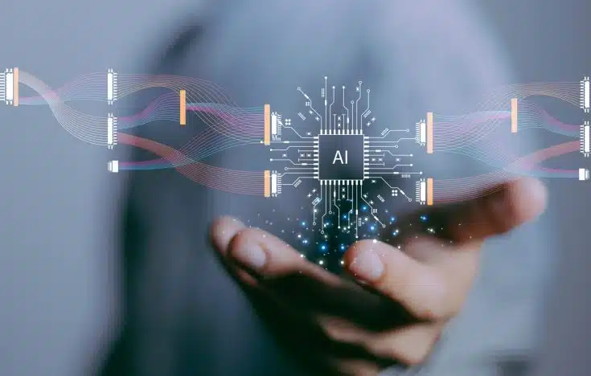

AI and Society: The New Frontier
Welcome to the frontier of tomorrow. As artificial intelligence rapidly weaves itself into the fabric of our daily lives, it is doing much more than just powering our favorite apps—it is fundamentally reshaping how we live, work, and care for one another. From revolutionizing life-saving medical treatments to redefining what it means to be a teammate in the modern workplace, AI is the defining technological leap of our generation. Explore how these intelligent systems are transforming society, amplifying human potential, and why guiding them with a strong moral compass has never been more vital.

AI’s Transformative Role in Healthcare
Artificial intelligence is rapidly changing the medical landscape in profound ways. By shifting how professionals approach care, AI brings major advancements such as:
- Improving diagnostic accuracy and accelerating drug development.
- Analyzing massive global datasets to better predict disease outbreaks and streamline complex health systems management.
- Handling time-consuming administrative data so healthcare professionals can dedicate more time to patient empathy and compassionate care, as experts emphasize that AI is not here to replace doctors.
- Making the push to ensure equitable access to these medical technologies across diverse healthcare systems a top global priority.
The Future of Work and "AI Teammates"
The integration of AI into the global workforce is shifting the focus from simple routine automation to genuine human amplification. This workplace transformation involves:
- Intelligent software taking over repetitive and predictable tasks, freeing employees up to engage in higher-value activities that require complex decision-making and creativity.
- A growing need for massive reskilling and upskilling, as the demand for AI-critical skills currently outpaces supply.
- Forward-thinking companies treating artificial intelligence not just as a software tool, but as AI teammates that collaborate seamlessly alongside human workers to boost innovation and elevate human potential.
Championing AI Ethics and Human Rights
As AI becomes deeply embedded in our daily lives, establishing strict ethical guidelines is crucial to protect society from unintended technological harm. Protecting our future involves:
- Addressing algorithmic bias, which can amplify and perpetuate historical inequalities if AI models are trained on flawed or unrepresentative data.
- Heavily advocating for transparency and explainability via international frameworks, ensuring that users always understand how and why an AI-driven decision was made.
- Guaranteeing strict human oversight and prohibiting invasive practices like mass surveillance, which are universally recognized as essential steps to ensure AI respects fundamental human rights and dignity.
AI and the Global Economy: Navigating the Next Industrial Revolution
The rise of Artificial Intelligence isn't just a technological milestone; it is an economic earthquake. As AI systems become deeply integrated into global markets, they are rewriting the rules of productivity, wealth distribution, and human labor. Will this era of rapid innovation lift all nations, or will it create an unprecedented digital divide? Explore how AI is reshaping the financial foundations of our world.

The Multi-Trillion Dollar Productivity Boost
Generative AI is positioned to be a massive catalyst for global growth. Recent research estimates that artificial intelligence could add up to $4.4 trillion annually to the global economy. This surge is driven by its ability to automate complex knowledge work, significantly increasing labor productivity across multiple sectors. Industries like banking, high tech, and life sciences are expected to see the most immediate financial benefits, transforming how businesses operate and scale.
Widening the Global Economic Divide
While the overall economic pie is expected to grow, the benefits of AI will likely be distributed unevenly. Advanced economies with mature digital infrastructure and strong institutional frameworks are heavily favored to reap early rewards. Conversely, emerging market and developing economies (EMDEs) face a high risk of falling behind. Because developing nations generally have lower AI preparedness and less capital for rapid tech investment, the global integration of AI threatens to exacerbate cross-country income inequality in the near term.
Reshaping the Global Labor Market
The rapid adoption of AI is causing a fundamental shift in global workforce demands. There is currently a massive surge in job vacancies demanding AI and IT skills, often yielding higher average wages for workers who possess them. However, this transition is also deepening labor market polarization. Roles with high exposure to automation but low complementarity to AI are experiencing declining employment rates, putting pressure on institutions to rapidly prioritize workforce reskilling and educational reform.
The Frontier of AI Innovation: What You Need to Know
Imagine a world where your software doesn't just wait for commands, but anticipates your needs, where life-saving drugs are designed in seconds, and where business workflows optimize themselves. This isn't science fiction—it's the reality of today's artificial intelligence. Welcome to the frontier of AI innovation, where we are moving beyond simple chatbots into an era of autonomous action and unprecedented problem-solving.
Artificial Intelligence is no longer just a futuristic concept or a novelty chatbot; it has evolved into a foundational technology driving real-world transformation. Today’s AI innovation is characterized by systems that can see, hear, and execute complex workflows, fundamentally changing how we approach everything from daily business operations to life-saving medical research. If you are looking to understand where the technology is heading, here are the core areas of AI innovation that are reshaping our world today.
1. The Era of Multimodal and Agentic AI
Traditional AI models were strictly unimodal—meaning a text model handled text, and a vision model handled images. The breakthrough of multimodal AI allows systems to process text, audio, images, and video simultaneously, much like how human senses work together to understand context. Furthermore, the industry is shifting from passive AI (which simply answers questions) to agentic AI (which can autonomously execute multi-step tasks on your behalf).
- Richer Contextual Understanding: By combining different data types, AI can now analyze a photo of a broken machine while simultaneously listening to your audio description of the problem, providing highly accurate and context-aware troubleshooting steps.
- Seamless Human-Computer Interaction: Multimodal models enable real-time, low-latency conversations where you can interrupt, show the AI your surroundings via your camera, and get instant, natural feedback.
- Autonomous Workflows: Agentic AI systems are being designed to act—like booking appointments, navigating complex software interfaces, or managing customer service escalations without requiring constant human prompting.
2. Revolutionizing Healthcare and Drug Discovery
Perhaps the most profound impact of AI innovation is happening in the biological sciences. The introduction of advanced models has drastically reduced the time it takes to map protein structures and understand complex molecular interactions. What used to take scientists years of expensive laboratory work can now be predicted computationally in a matter of seconds.
- Atomic-Level Predictions: Modern AI can predict the 3D structures of DNA, RNA, and complex protein interactions, providing a highly accurate "virtual lab" for researchers.
- Accelerated Drug Design: By computationally modeling how potential drugs interact with target proteins, pharmaceutical companies can bypass years of trial-and-error in the early stages of drug discovery.
- Targeted Therapies: Enhanced structural understanding allows for the creation of highly specific treatments, including novel antibodies and precision medicine tailored to specific genetic profiles and diseases.
3. Scaling AI: From Experimentation to Enterprise Value
While the initial hype around AI focused on simple content generation, businesses are now heavily focused on scaling AI to drive measurable operational value. The transition from isolated "pilot projects" to enterprise-wide integration requires massive shifts in data management, workflow redesign, and responsible AI governance.
- Workflow Redesign: The most successful organizations aren't just bolting AI onto old processes; they are redesigning their workflows so that AI handles repetitive tasks while humans handle exceptions, empathy, and high-level strategy.
- Emphasis on Data Discipline: AI acts as a magnifying glass for data. Companies are heavily investing in cleaning and organizing their proprietary data, knowing that an AI system is only as good as the information it processes.
- Responsible AI and Trust: With increased adoption comes increased risk. Top innovators are building rigorous frameworks to monitor AI accuracy, prevent data breaches, and ensure compliance, treating "AI trust" as a core business metric rather than an afterthought.
Embracing the Next Wave
The pace of AI innovation shows no signs of slowing down. As multimodal capabilities become more sophisticated and models become better integrated into scientific research and daily business operations, the focus will increasingly shift toward responsible, secure deployment. Staying informed about these advancements is no longer just for tech enthusiasts—it is an absolute necessity for anyone looking to remain competitive, efficient, and forward-thinking in today's digital landscape.
Beyond the Horizon: The AI Frontier of 2040
Imagine waking up in a world where your doctor is an autonomous algorithm, your digital avatar handles your daily errands, and the global economy has been entirely rewritten by machine intelligence. We are standing on the brink of an unprecedented technological revolution. Fasten your seatbelts as we dive into the fascinating, complex, and transformative roadmap of AI technology leading up to the year 2040.
The Road to 2040: A Glimpse into Our AI-Driven Future
The roadmap of AI technology leading up to 2040 presents a transformative journey where machines will evolve from specialized tools into highly autonomous systems. Experts predict that over the next couple of decades, AI will not only integrate into nearly every aspect of our daily lives but also fundamentally challenge our definitions of human work, creativity, and interaction. Many researchers suggest that we could see the emergence of Artificial General Intelligence (AGI)—systems capable of understanding, learning, and applying knowledge across a wide range of tasks at or above human levels—around this timeframe.
As we approach 2040, this transition will bring profound societal and economic shifts. While AI promises unprecedented efficiencies in fields like medicine, research, and logistics, it also raises significant concerns about mass unemployment, widening inequalities, and the urgent need for robust global governance. For instance, some predictive models forecast a high probability of severe AI-induced unemployment affecting up to 40–50% of the workforce, outpacing current regulatory frameworks and potentially causing societal fragmentation if governments do not prepare proactively.
Preparing for this future means understanding the dual nature of AI's progression. It is crucial for businesses, governments, and individuals to anticipate both the remarkable benefits and the complex risks of a world deeply intertwined with machine intelligence.
Key Projections for AI in 2040
Here is a breakdown of what the AI roadmap looks like across key sectors by 2040:
- Healthcare Autonomy: Medical fields, such as dentistry and surgery, will likely see AI evolving from basic diagnostic aids to systems capable of autonomous real-world execution and highly personalized, predictive treatment planning.
- Workforce Disruption: A major restructuring of the economy is expected. While traditional roles may face up to 50% automation, a new "self-actualized economy" could emerge, creating entirely new industries focused on managing, auditing, and collaborating with AI.
- Digital Avatars and Identity: The boundary between humans and machines will blur. Individuals may rely on 3D, photo-realistic avatars equipped with self-sovereign identities to carry out complex daily tasks and manage their personal data securely.
- Energy Consumption: The massive computational power required to sustain AI ecosystems will significantly strain global energy grids. Without massive efficiency gains and a shift to low-carbon sources, AI could consume a vast percentage of global electricity, necessitating greener, more sustainable infrastructure.
- Geopolitical Power: The mastery of AI technology will become a primary driver of geopolitical dominance. Nations that lead in AI infrastructure will hold significant global influence, requiring unprecedented cross-border collaboration to ensure stability rather than conflict.
Top 10 Future AI Technologies
Welcome to the frontier of innovation. From quantum processing to brain-inspired hardware, here is a quick guide to the top 10 future AI technologies set to transform how we live, work, and interact with the world.
- Artificial General Intelligence (AGI)
AGI is a theoretical form of AI capable of understanding, learning, and applying intelligence across any cognitive task at a level equal to or beyond human capacity. It represents the shift from highly specialized tools to fully adaptable, reasoning machines. - Quantum Machine Learning
By combining the exponential processing power of quantum computing with AI, this technology can analyze massive, multidimensional datasets instantly. It is set to accelerate breakthroughs in everything from climate modeling to advanced materials. - Neuromorphic Computing
Neuromorphic chips are hardware designed to mimic the neural structures and energy efficiency of the human brain. This architecture drastically lowers the power consumption of AI models while enabling real-time, adaptable learning. - Federated Learning
Federated Learning protects user privacy by training AI models locally on your devices rather than sending sensitive data to a central cloud. Only the learned insights are shared back, ensuring data security and regulatory compliance. - Explainable AI (XAI)
XAI strips away the "black box" of complex algorithms by providing transparent, human-readable explanations for how an AI system makes its decisions. This is crucial for building trust and ensuring fairness in high-stakes fields like healthcare and finance. - Autonomous AI Agents
Unlike standard chatbots that wait for prompts, autonomous agents can independently plan, execute, and self-correct complex workflows. They act as 24/7 digital collaborators capable of achieving multi-step goals across various software tools. - Multimodal AI
Multimodal AI interacts with the world like humans do by simultaneously processing multiple types of data—including text, audio, images, and video. This allows for vastly more intuitive and context-aware human-computer interactions. - Edge AI
Edge AI pushes machine learning out of the cloud and directly onto local devices like smart cameras, drones, and sensors. This enables instant, low-latency decision-making that works even without an internet connection. - Synthetic Data Generation
As AI models require increasingly massive datasets, gathering real-world information often hits privacy and logistical limits. Synthetic data is artificially created information that perfectly mimics the statistical properties of real data without containing sensitive user details. This provides a privacy-compliant, cost-effective way to train machine learning models while reducing historical biases. - AI-Powered Digital Twins
A digital twin is a complex, predictive virtual replica of a physical object or system, such as a jet engine or a supply chain. AI allows organizations to run millions of risk-free simulations on these twins to optimize real-world performance.
A World Reshaped by Artificial Intelligence
Artificial Intelligence is no longer just a technological marvel; it is a general-purpose technology reshaping the very foundations of the global landscape. From economics and environmental conservation to healthcare and international policy, the ripple effects of AI are widespread. Understanding this impact is crucial for navigating both the immense opportunities and the profound challenges it presents.

The Economic Transformation
According to the International Monetary Fund (IMF), artificial intelligence is poised to transform the global economy. Unlike previous technological revolutions that primarily affected manual labor, AI's rapid evolution uniquely impacts high-skilled jobs.
- Job Exposure: Globally, almost 40 percent of jobs are exposed to AI. In advanced economies, this figure rises to roughly 60 percent, whereas emerging markets and low-income countries face an exposure of 40 percent and 26 percent, respectively.
- Productivity vs. Displacement: Half of the exposed jobs may benefit from AI integration, enhancing productivity. However, the other half may see AI executing key tasks currently performed by humans, which could lower labor demand, depress wages, and eliminate certain roles entirely.
- Inequality: A significant concern is that AI could worsen overall inequality. It may disproportionately reward higher-income earners who can leverage AI tools, while creating a divide among workers based on their ability to adapt to new technologies.
Advancing Global Health
The World Health Organization (WHO) emphasizes that AI holds enormous potential to improve the health of millions globally. AI can significantly enhance health outcomes by:
- Speeding up the speed and accuracy of medical diagnostics.